China Employee Termination 2026: Pulse Checklist-Ledger Brief for Foreign Employers
Key takeaways
- In China, termination outcomes improve when teams run a checklist-ledger: checklist for control completeness, ledger for evidence continuity.
- Legal route clarity must come before messaging, and payroll/tax reconciliation must come before final communication.
- Foreign employers should treat city-level validation as mandatory, not optional, in every case.
- The fastest safe execution model is cross-functional: HR, legal, payroll, and manager actions logged in one timeline.
- This brief prioritizes practical decisions first, with legal detail in the appendix.
What changed and why this matters now
Many international teams now use strong checklists but still lose control in live cases because they cannot prove sequence integrity. In practice, disputes often hinge on whether the employer can show a coherent “who did what, when, and on what basis” story. A checklist alone confirms tasks were intended; a ledger confirms tasks were actually completed in defensible order.
This run adopts a checklist-ledger format (different from watchlist, myth-vs-fact, matrix, switchboard, and decision-tree structures) to make execution auditable and easier to defend.
Plain-language legal context first
China employer-side termination is generally route-based and evidence-based, not at-will. Public legal anchors include the PRC Labor Contract Law framework, implementing regulation references (including Decree No. 535 context), and Supreme People’s Court labor-dispute interpretation materials. For foreign readers, the practical meaning is straightforward: if legal route, facts, communication, and settlement records do not align, the company can face higher dispute risk even when business drivers are legitimate.
Operationally, think of termination as two synchronized systems: a control checklist (requirements) and an evidence ledger (proof of compliant sequence).
Pulse checklist-ledger model
Section A: The 10-point control checklist (must-pass)
- Route rationale memo approved.
- City-level validation memo attached.
- Chronology evidence pack complete.
- Manager narrative reconciled with documents.
- Script approval completed.
- Payroll/severance worksheet finalized.
- IIT/social handling validated.
- Payment proof plan confirmed.
- Closure archive index prepared.
- Exception owner assigned and on-call.
Pulse rule: If any item is incomplete, case status stays “hold.”
Section B: The execution ledger (must-match)
For each checklist item, log:
- owner
- timestamp
- source document ID
- approval reference
- exception note (if any)
Pulse rule: Missing ledger linkage = control not recognized as complete.
Why this works for foreign employers
Global stakeholders often need rapid assurance that local execution is controlled without reading full legal files. The checklist gives a quick status signal; the ledger provides traceability when challenged. Together, they reduce ambiguity between headquarters expectations and local compliance reality.
Practical scenarios
Scenario 1: Checklist complete, ledger weak
HR reports all tasks done, but timestamps and document references are missing for key steps. In dispute, this appears as procedural uncertainty.
Fix: block closure until ledger links are complete for each control point.
Scenario 2: Ledger complete, route memo weak
Documentation is organized, but legal route reasoning is underdeveloped. This creates a polished but fragile case.
Fix: strengthen route memo and city validation before progressing.
Scenario 3: Payroll finalized late
Termination meeting occurs, then final pay/tax treatment is adjusted afterward.
Fix: enforce pre-communication payroll gate; ledger must show payroll sign-off timestamp before meeting timestamp.
Role-owned SOP (checklist + ledger)
Step 1 — Route and locality validation
Owners: HRBP + Legal + local reviewer
- Draft and approve route rationale.
- Add city-level validation note.
- Open ledger entry IDs for both documents.
Step 2 — Evidence synchronization
Owners: HR Operations + Manager + Compliance
- Build chronology table with source ownership.
- Resolve narrative inconsistencies.
- Record approvals and remediation notes in ledger.
Step 3 — Communication control
Owners: HR lead + manager sponsor
- Finalize script package and spokesperson.
- Confirm do-not-say boundaries.
- Ledger log: script version, approver, briefing timestamp.
Step 4 — Payroll/tax settlement gate
Owners: Payroll + Tax + HR Ops
- Finalize all pay items and timing.
- Validate IIT/social treatment.
- Ledger log: sign-off IDs before meeting window.
Step 5 — Execution and archive
Owners: Compliance + Records + Payroll archive owner
- Capture meeting metadata.
- Store signed docs and payment proof.
- Publish closure memo with index links.
Required document checklist
- Employee profile snapshot
- Route rationale memo
- City-level validation memo
- Chronology ledger
- Performance/discipline file (if relevant)
- Script package and approvals
- Settlement and acknowledgment records
- Final payroll/severance worksheet
- IIT/social handling note
- Payment evidence
- Closure memo and archive index
Exception handling playbook
Exception A: Missing critical document before meeting
- Action: auto-hold case; assign recovery owner; update expected release time.
Exception B: Conflicting manager statements discovered late
- Action: freeze communication, issue reconciliation note, re-approve script.
Exception C: Local interpretation disagreement
- Action: create interpretation memo with options and risk labels; obtain localized advice.
Exception D: Payroll correction required after communication
- Action: log correction incident, execute same-day remediation, preserve audit trail.
Exception E: Employee challenges factual basis in meeting
- Action: shift to written clarification channel; avoid unscripted legal assertions; maintain evidence chain.
System implementation notes
- Add workflow fields for checklist completeness score and ledger integrity score.
- Require document ID linkage for every completed checklist item.
- Automate communication lock until payroll/tax sign-off exists in ledger.
- Track recurring exception types and response times.
- Build monthly dashboard: hold causes, late corrections, dispute incidence.
Common mistakes and prevention
- Mistake: checklist-only governance.
Prevention: mandatory ledger traceability.
- Mistake: route memo drafted too late.
Prevention: root-gate requirement before evidence work.
- Mistake: payroll treated as downstream admin.
Prevention: pre-communication payroll gate.
- Mistake: local variation ignored.
Prevention: city memo required in every case.
- Mistake: closure without retrieval readiness.
Prevention: indexed archive QA.
What to do now
- Deploy a combined checklist-ledger template across China entities.
- Set pass thresholds for control completeness and ledger integrity.
- Enforce route memo + city memo before communication prep.
- Add payroll/tax pre-meeting gate with hard lock.
- Run random monthly audits on ledger traceability.
- Train managers on script discipline and statement risk.
- Feed exception trends into control redesign.
What to watch next
- City-level practical expectations may continue to diverge.
- Case volume surges can increase ledger-quality drift if staffing is thin.
- Practitioner guidance may evolve on evidence sufficiency expectations.
FAQ
1) Why combine checklist and ledger?
Checklist confirms required controls; ledger proves defensible execution order.
2) Can we close a case if one checklist item is pending but low risk?
Not recommended. Small omissions often become major issues in disputes.
3) Is payroll sign-off really pre-communication critical?
Yes. Late corrections create avoidable friction and credibility loss.
4) How detailed should the ledger be?
Detailed enough to connect each control to owner, time, and source evidence.
5) What if local and HQ interpretations differ?
Document both, escalate with risk labels, and seek localized legal input.
6) What is the biggest avoidable control failure?
Communicating before route/evidence/payroll controls are all traceably complete.
7) How do we improve over time?
Audit exception patterns and revise templates/training based on repeat failures.
Legal depth appendix (secondary)
This brief synthesizes official/legal references and practitioner analysis relevant to employer-side termination operations in China. Core anchors include the PRC Labor Contract Law framework, implementing regulation references linked to Decree No. 535 context, and Supreme People’s Court labor-dispute interpretation materials. Practitioner and market/payroll sources help translate legal principles into execution controls for foreign employers. Uncertainty remains primarily in city-specific and fact-specific application, requiring localized professional validation in live cases.
Disclaimer
This content is informational only and does not constitute legal, tax, or employment advice.
Sources
- National People’s Congress (Labor Contract Law, English text), accessed 2026-03-05: http://www.npc.gov.cn/zgrdw/englishnpc/Law/2007-12/13/content_1384064.htm
- State Council Gazette reference (implementing regulation / Decree No. 535 context), accessed 2026-03-05: https://www.gov.cn/gongbao/content/2008/content_1124615.htm
- Supreme People’s Court labor dispute interpretation update page, accessed 2026-03-05: https://www.court.gov.cn/fabu/xiangqing/243981.html
- China Briefing, Employee Termination in China, accessed 2026-03-05: https://www.china-briefing.com/news/employee-termination-in-china/
- ICLG Employment & Labour Laws and Regulations: China, accessed 2026-03-05: https://iclg.com/practice-areas/employment-and-labour-laws-and-regulations/china
- Littler ASAP analysis on China employment law developments, accessed 2026-03-05: https://www.littler.com/news-analysis/asap/key-recent-developments-chinas-employment-law-china-us-comparative-perspective
- PwC PRC Individual Income Tax summary, accessed 2026-03-05: https://taxsummaries.pwc.com/peoples-republic-of-china/individual/taxes-on-personal-income
Need local employment support in China?
If you need a compliance-first partner for hiring, payroll, and risk controls in China, China-Payroll.com can help evaluate the right setup.
Image Prompt Pack
Create a 16:9 hero image for article title: 'China Employee Termination 2026: Pulse Checklist-Ledger Brief for Foreign Employers'. Scene: global operations team evaluating workforce model options for China market entry. Include motifs: decision matrix, org cha…